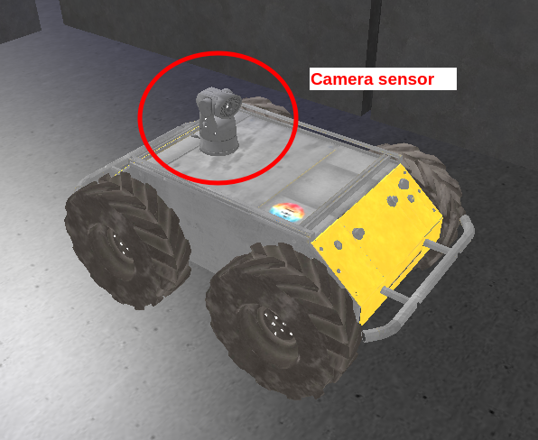
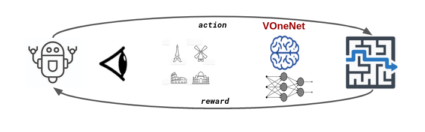
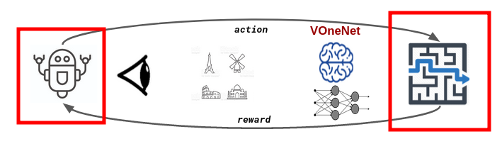
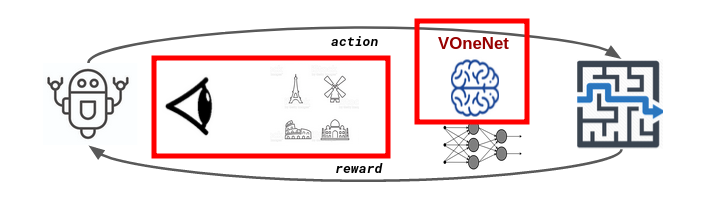
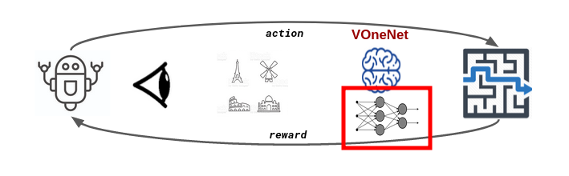
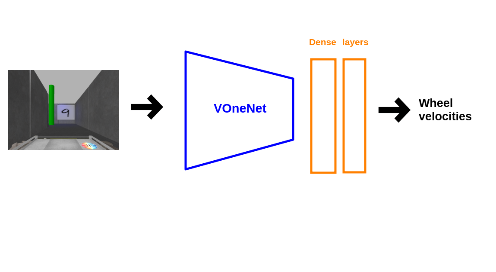

Sensory Motor Integration
Project 1: Setup RL pipeline
Sami BARCHID, Xuanyu Wu
Mapless robot navigation
- A husky robot equipped with a vision sensor navigates through a maze

Tools
- NeuroRobotics Platform (NRP)
- Visual feature extractor (VOneNet)
- Reinforcement Learning (DQN)

Tools
- NeuroRobotics Platform (NRP)
- Visual feature extractor (VOneNet)
- Reinforcement Learning (DQN)

Tools
- NeuroRobotics Platform (NRP)
- Visual feature extractor (VOneNet)
- Reinforcement Learning (DQN)

Tools
- NeuroRobotics Platform (NRP)
- Visual feature extractor (VOneNet)
- Reinforcement Learning (DQN)

Reinforcement Learning in the NRP
- Environment: Maze Experiment
- Agent: Husky Robot
- Actions: right and left wheel velocities
- Observations: RGB image at each timestep
Visual Feature Extractor
- Sensor: embedded RGB camera
- Model: VOneNet
- Robust and bio-inspired DCNN
- Pre-trained on ImageNet
- First part of the DQN
Reinforcement Learning Model

Reward
- Positive reward $r_{arrival}$ when the agent arrives at the target position.
- Negative reward $r_{collision}$ if collision
- Otherwise, reward proportional to the distance between agent and target (with a time penalty)
Pipeline is done
- Agent implementation
- Retrieve observations
- Reward system
- One simulation in the NRP = one episode
- RL statistics, ...
- TODO: train the agent
Personal feedbacks
- Learning RL on the fly
- NRP is challenging